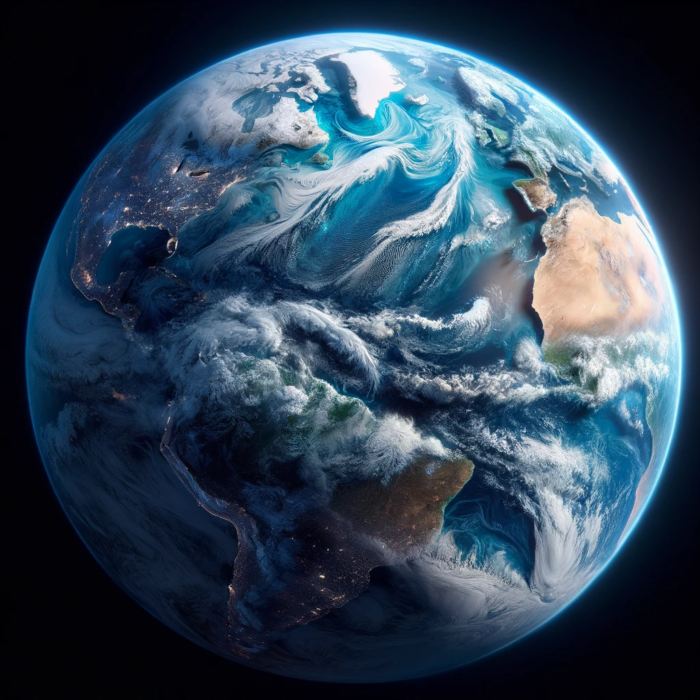
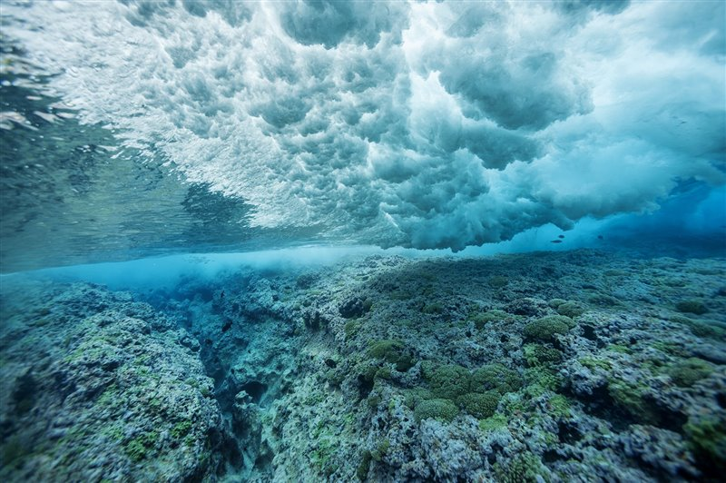

¿Cuál es el volumen total de agua de la Tierra?

El nuestro es un planeta conformado en su mayor parte por agua. Pero ¿de cuánto estamos hablando
exactamente? Alrededor del 71% de la superficie de la Tierra está cubierta por este elemento, y los
océanos albergan alrededor del 96,5% de todo ese volumen. El agua puede encontrarse también en el aire,
en forma de vapor, así como el ríos, lagos, casquetes polares y glaciares, en acuíferos, en la humedad
que se condensa en el suelo… y en el interior de nuestro propio organismo.
¿Cuánta agua está congelada?

Evidentemente, tal y como hemos comentado en el punto anterior, no toda el agua del planeta está en estado
líquido. Una parte nada desdeñable está congelada en los casquetes polares, glaciares y nieve permanente.
Esta supone, según los datos de USGS, unos 24.064.000 kilómetros cúbicos. A este volumen habría que sumarle
unos 300.000 kilómetros cúbicos de hielo permanente (permafrost) que se encuentra bajo tierra en las zonas
extremadamente frías del planeta, lo que daría un total de 24.364.000 kilómetros cúbicos de agua congelada
en el planeta.
¿Qué porcentaje del océano son zonas marinas protegidas?

Las áreas marinas protegidas, o AMP, son esenciales para la salud ambiental: aseguran que los pescadores
tengan reservas viables al evitar el agotamiento de los recursos; protegen especies en peligro de extinción;
hacen que los ecosistemas sean más resistentes al cambio climático y mantienen la biodiversidad. Sin
embargo, todavía queda mucho por hacer si queremos proteger los océanos.
Es difícil obtener un dato exacto sobre el porcentaje de nuestros océanos que goza de algún tipo de
protección. En una conferencia de las Naciones Unidas celebrada hace un par de años se concluía que para
2020 un 10% de todos los océanos del planeta estarían protegidos.
Sin embargo, algunos estudios cifraban esta proporción en menos del 3,6%. La Unión Internacional para la
Conservación de la Naturaleza (UIC) establece pautas internacionales para el establecimiento de Áreas
Marinas Protegidas (AMP), de cuyo registro se encarga la Comisión Mundial de Áreas Protegidas de la UICN,
que elabora una base de datos mundial. En Europa, los datos oficiales apuntan a que las AMP corresponden al
10% de las aguas del Viejo Continente, aunque algunas organizaciones conservacionistas, como WWF, apuntan
que la cifra real no supera el 5%. En España el porcentaje es de aproximadamente un 12%.
| Océano |
Superficie (km²) |
Salinidad (psu) |
Profundidad Máxima (m) |
Media de Temperatura (°C) |
Ubicación |
| Pacífico |
63,800,000 |
35 |
10,984 (Fosa de las Marianas) |
Varía de -1.4 a 30 |
Entre Asia y América |
| Atlántico |
41,100,000 |
35-37 |
8,376 (Fosa de Puerto Rico) |
Varía de -2 a 30 |
Entre América y África/Europa |
| Índico |
70,560,000 |
32-37 |
7,258 (Fosa de Java) |
Varía de -1 a 30 |
Entre África, Asia y Australia |
| Antártico |
20,327,000 |
34 |
7,236 (Fosa de South Sandwich) |
Varía de -2 a 2 |
Rodea la Antártida |
| Ártico |
15,558,000 |
30-34 |
5,450 (Cuenca de Lomonósov) |
Varía de -1.8 a 0 |
Rodea el Polo Norte |
| Zona |
Estrato |
Significado |
Profundidad (m) |
Iluminación |
Temperatura |
| Fótica o iluminada |
Epipelágica |
Epi, sobre |
0 a 200 |
Buena |
Estable y desciende en termoclina |
| Mesopelágica |
Meso, enmedio |
200 a 1,000 |
Escasa |
5 a 10º C |
| Afótica o sin luz |
Batipelágica |
Bati, profundo |
1,000 a 4,000 |
Sin luz |
0 a 4º C |
| Abisopelágica |
Abiso, profundidad |
4,000 a 6,000 |
Sin luz |
0 a 4º C |
| Hadopelágica |
Hado, fuerza desconocida |
6,000 en adelante |
Sin luz |
|